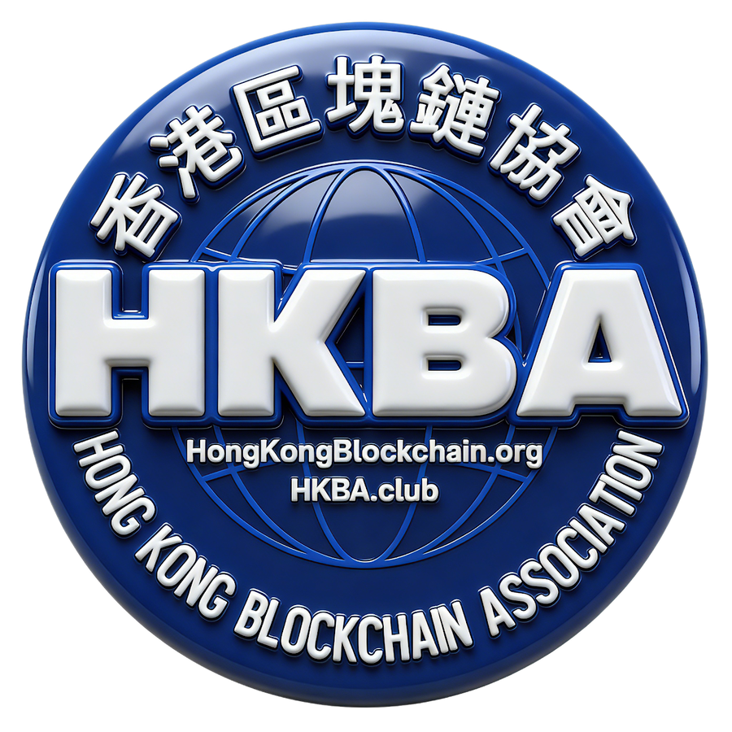
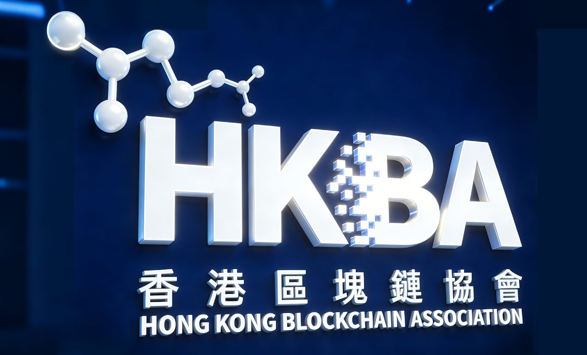
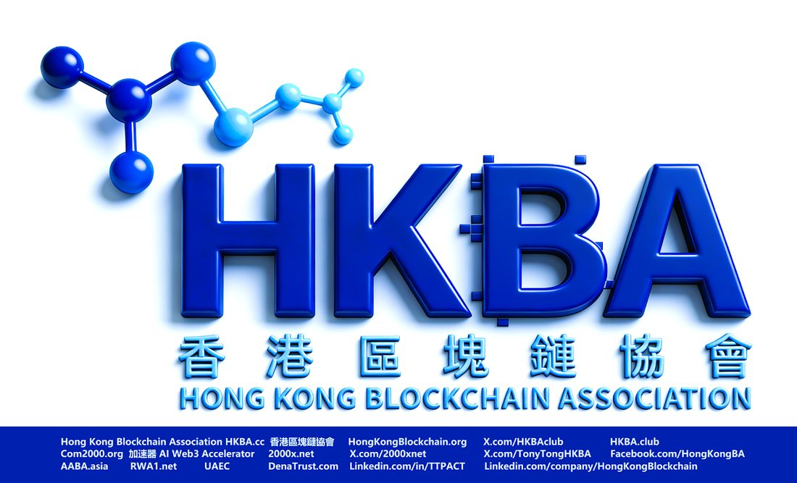
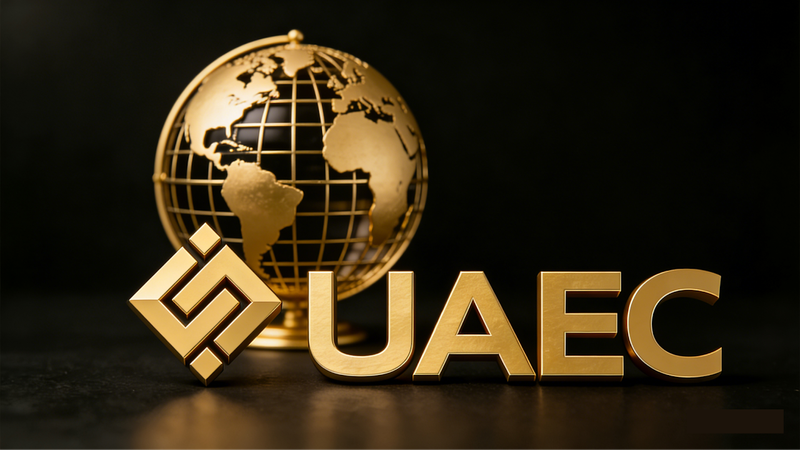
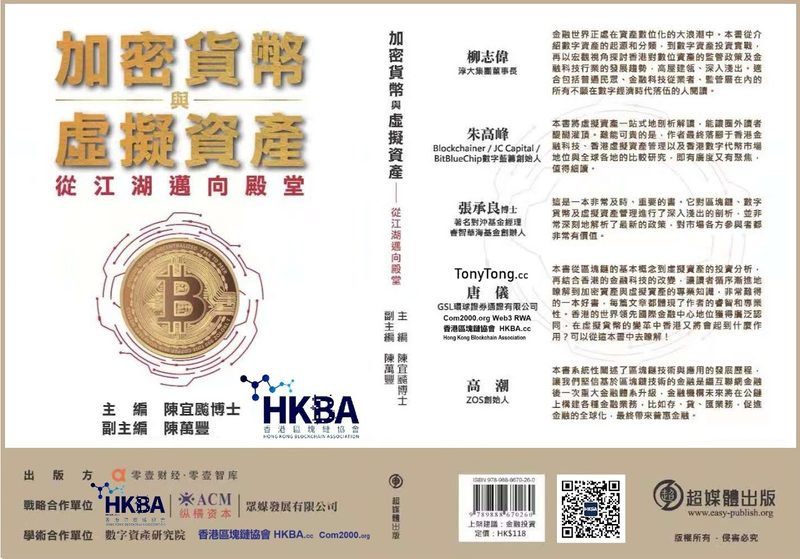
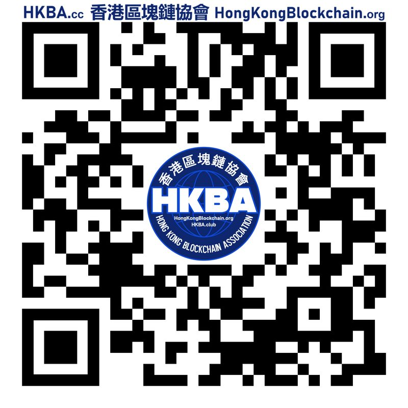
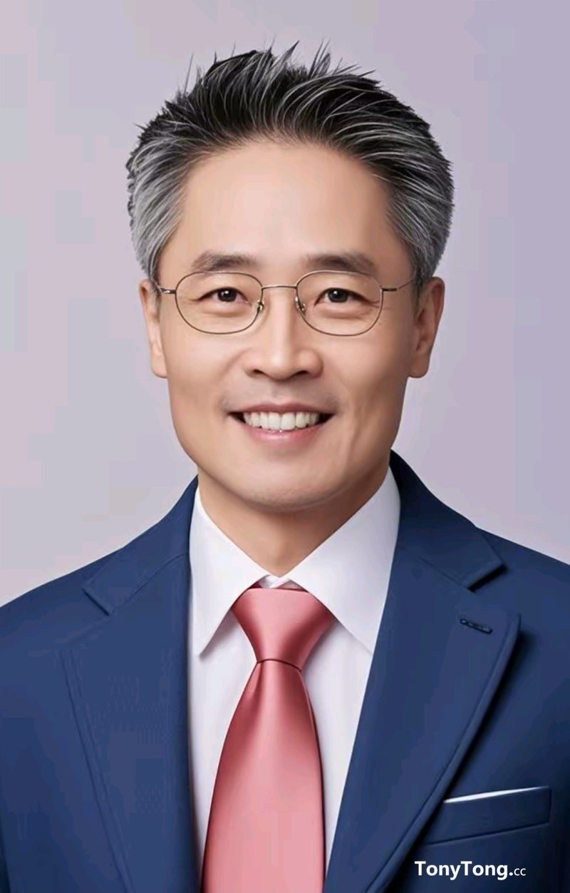
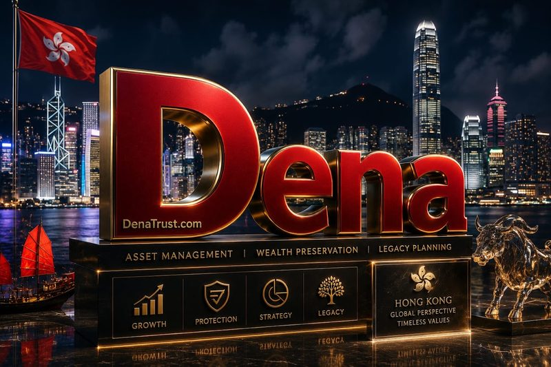
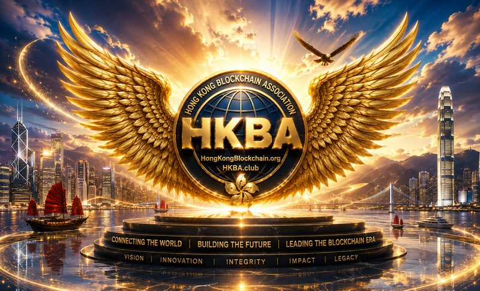

開放、自主、平等的去中心化行業組織 —— 鏈接大中華與 Web3 世界，將香港打造成新時代的 AI Blockchain 金融科技中心。
An open, self-governed and decentralized industry association connecting Greater China with the Web3 world — building Hong Kong as the AI-Blockchain FinTech hub of the new era. Est. 2017 · Member of ASEAN AI Blockchain Alliance (AABA.asia)
HongKongBlockchain.org · HKBA.club · HKBA.cc · Com2000.org Web3 Accelerator

香港區塊鏈協會 HKBA 是一個開放、自主、平等的去中心化組織（Decentralized Organization DAO）。通過學習、交流及推廣區塊鏈技術及應用，HKBA 致力於成為鏈接大中華及 Web3 元宇宙世界的銜接平臺，並將香港打造成新時代的 AI Blockchain 金融科技中心。
HKBA 元宇宙教育學院 1College.org 是一個開放的線上教育知識共用平臺 —— 連接行業專家、風險投資和天使投資人、教師講師教授、學生、企業家、初創企業和 Web3 孵化器的線上知識共用平臺和 AI 學習社區。
HKBA is dedicated to being an open platform for members to engage with multiple stakeholders and promote best practices in a collaborative, open and transparent manner. It aims to promote blockchain literacy and build a strong talent pipeline for the Web3 ecosystem in Hong Kong and the Greater Bay Area. HKBA is a member of the ASEAN AI Blockchain Alliance (AABA.asia · ASEANblock.org).
香港區塊鏈協會 HKBA 於 2017 年由四位聯合創始人共同創立：唐儀 TonyTong.cc、張俊勇 ThomasCheung.cc（香港區塊鏈學會 HKBCS）、蔡維德教授 Prof. Wei-Tek Tsai（北航區塊鏈實驗室）與 梁捷輝 Jay Liang（GSR Matrix Fund）。協會已發展成為香港及大灣區區塊鏈與 Web3 社區的領先行業協會。
HKBA 致力於賦能會員與社區，運用區塊鏈和 Web3 技術實現業務增長與轉型；推動區塊鏈知識普及，為香港與大灣區 Web3 生態建設強大的人才管道。
HKBA was formed in 2017 by co-founders Tony Tong, Thomas Cheung (Hong Kong Blockchain Society), Prof. Wei-Tek Tsai (Beihang University Blockchain Lab) and Jay Liang (GSR Matrix Fund). Since then, HKBA has grown to become the leading industry association for the Blockchain and Web3 community in Hong Kong and the Greater Bay Area.

HKBA 與香港及海外領先大學合作，提供 Blockchain、AI 與 Web3 教育，培養數字經濟人才。









Frequently asked questions about the Hong Kong Blockchain Association.
香港區塊鏈協會（HKBA，Hong Kong Blockchain Association）成立於 2017 年，是香港及大灣區領先的區塊鏈與 Web3 行業協會，也是 ASEAN AI Blockchain Alliance（AABA.asia）成員，致力於鏈接大中華與 Web3 世界。
HKBA was co-founded in 2017 by Tony Tong, Thomas Cheung (Hong Kong Blockchain Society), Prof. Wei-Tek Tsai (Beihang University Blockchain Lab) and Jay Liang (GSR Matrix Fund).
可通過 Telegram @HKBAclub 申請加入，或電郵 info@HKBA.club 聯繫協會。會員涵蓋金融、科技、法律、投資與學術界專業人士。
HKBA 在香港（銅鑼灣總部、灣仔 VIP Clubhouse、尖沙咀 The Arch）、深圳（南山、福田）及越南胡志明市設有辦公地點，覆蓋美國、歐洲、中東、東南亞的顧問網絡。
Email: info@HKBA.club · HongKongBlock@gmail.com
Telegram: @HKBAclub · 鏈1傳媒 Link1.us
填寫以下表單，你的訊息將自動發送至 PR@HKBA.net。Send us a message — it goes straight to PR@HKBA.net.
香港銅鑼灣登龍街1-29號 金朝陽中心2期 19樓 A19A
Soundwill Plaza II Midtown, 1-29 Tang Lung St, Causeway Bay
香港灣仔堅拿道西10號 冠景樓3樓A室
Flat A, 3/F, Top View Mansion, No. 10 Canal Road West, Wanchai
廣東省深圳市南山區深南大道 大沖商務中心 A座20樓2002室
秘書長 常佳佳 13439350234
深圳市福田區金田路3037號 金中環商務大廈4203室
Room 4203, JingZhongHuan Business Center, 3037 Jingtian Road, FuTian District
Vincom Dong Khoi, 72 Le Thanh Ton, Ben Nghe, District 1, Ho Chi Minh City